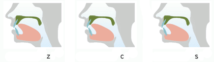

| Labio labial |
Labio dental |
Alveolar |
Palatal | Alveo palatal |
Velar |
||||
|---|---|---|---|---|---|---|---|---|---|
| voiceless | voiceled | voiceless | voiceless | voiceled | voiceless | voiceled | voiceless | voiceless | |
| Stop non aspirated |
b [p] | d [t] | g [k] | ||||||
| Stop aspirated |
p [pʰ] | t [tʰ] | k [kʰ] | ||||||
| Affricate non aspirated |
z [ts] | zh [ʈʂ] | j [tɕ] | ||||||
| Affricate aspirated |
c [tsʰ] | ch [ʈʂʰ] | q [tɕʰ] | ||||||
| Fricative | f [f] | s [s] | sh [ʂ] | r [ʐ~ɻ] | x [ɕ] | h [x] | |||
| Nasal | m [m] | n [n] | |||||||
| Lateral | l [l] | ||||||||
| Sonorant | y [j] / [ɥ], w [w] | ||||||||
Voiced/Voiceless consonants pairs pronounced as Aspirated/Non Aspirated pairs:
b - р
d - t
g - k
z - с
zh - ch
j - q
z, c, s - tip of the tongue raised to alveoles

zh, ch, sh, r - tip of the tongue raised to palate
zh, ch, sh - voiceless
r - voiced
j, q, x - tip of the tongue pressed to lower teeth, sides of the tongue touch upper teeth
x - hissing sound